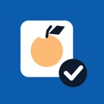
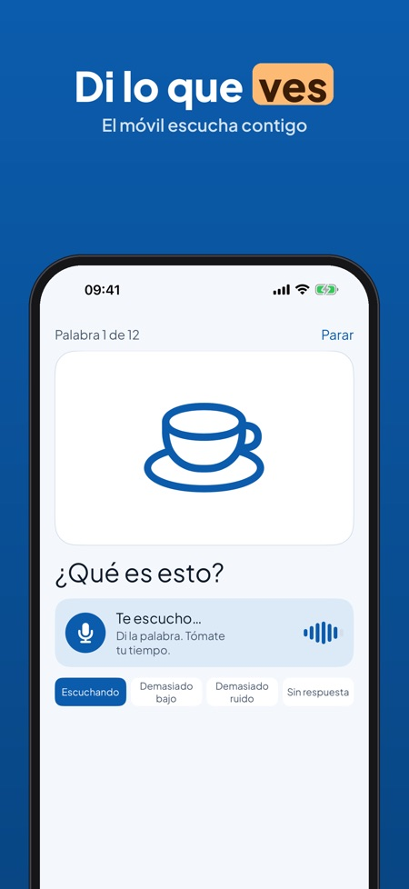
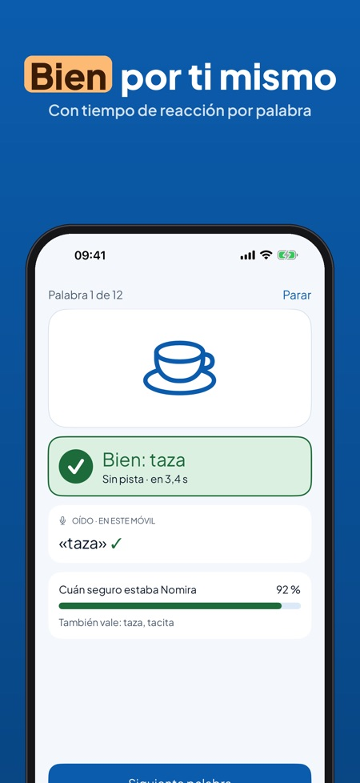
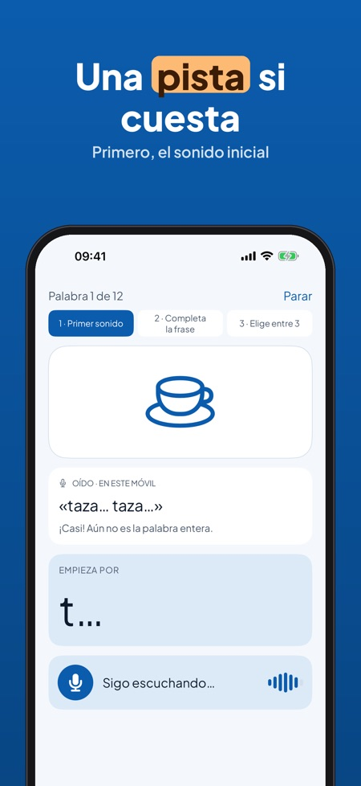

Mira la imagen, di la palabra. Novedad para las fiestas: 16 palabras sobre la familia y estar juntos, abiertas sin compra. Mira la imagen, di la palabra y practica con tu familia o cuidador.



Nomira ayuda a personas con afasia a practicar palabras cada día. Ves una imagen y dices la palabra en voz alta. Nomira escucha en el móvil y muestra si ha oído la palabra. Si no sale, llega una pista: primero el sonido inicial, luego una frase para completar y al final tres palabras para elegir.
La serie Cocina con 15 palabras, la escucha, las tres pistas, el tiempo de reacción, el progreso de esta semana y el modo en que marcas tú si ha salido bien funcionan sin compra. Nomira Plus es una compra única: las 10 series, verbos incluidos, el progreso de semanas anteriores y el informe semanal en PDF, que envías tú por correo, Mensajes o AirDrop. Sin suscripción, sin anuncios.
Nomira es una app para practicar: un complemento a las sesiones con el logopeda, no un sustituto. No diagnostica ni trata nada. El reconocimiento puede fallar; siempre decides tú. El habla se reconoce en el móvil; no se guarda ni se envía ningún sonido. Sin micrófono, marcas tú si ha salido bien.